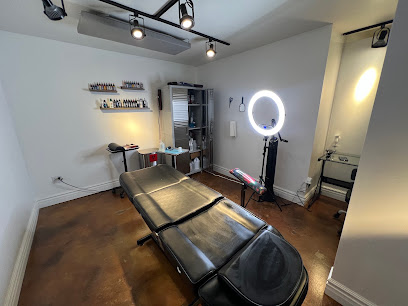

Flagstaff, Arizona · 5.0 rating on Google
A painter's tattoo studio in Flagstaff.
Every piece is its own painting, made for the body it's going on, not pulled off a wall of flash.
“I don’t have a style.”
Landis Bahe, on how he approaches every piece (as told to the Museum of Indigenous People, 2019)
From canvas to skin
Landis Bahe grew up on the Navajo Nation and was a painter long before he picked up a tattoo machine. Paintings like Ancient Ones, The Gifts, and Walking in Beauty carry the same feel for pattern and story that now shows up on skin.
In 2018 he co-founded PIVOT: Skateboard Deck Art with Hopi artist Duane Koyawena, a Museum of Northern Arizona exhibition of Indigenous artists painting on skateboard decks. The following spring, the Museum of Indigenous People named him the inaugural artist of its Contemporary Native Arts Festival.
This isn't the first shop Landis has run on this stretch of San Francisco Street. The same address held Tat-Fu Tattoo for years before he closed it and opened Near the Mountain in its place.
How a session works
“When I tattoo, I’m like a vessel.”
Landis designs around the person in the chair rather than a fixed style. He's put it as “you're going to see something very contemporary and very old school” coming out of the same hand, piece to piece.
Book ahead for a larger custom piece, or stop by: walk-ins are welcome whenever the chair's open.
Near the Mountain Tattoo
427 S San Francisco St Ste B
Flagstaff, AZ 86001
A few blocks from the NAU campus, in downtown Flagstaff.
(928) 213-6912Checking hours…
Hours
- MondayClosed
- Tuesday11:00 AM–7:00 PM
- Wednesday11:00 AM–7:00 PM
- Thursday11:00 AM–7:00 PM
- Friday11:00 AM–7:00 PM
- Saturday11:00 AM–7:00 PM
- SundayClosed